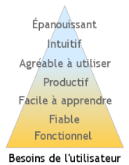

5 février 2007
Rien de technique aujourd’hui. Juste une histoire qui a la force d’un proverbe. Build a plane and fly to Sicily. L’histoire d’un type qui fait des copies en plâtre de Michel-Ange dans son garage. Et qui construit des avions. Parce que sa femme veut aller en Sicile. Est-il sérieux ? Peu importe, il suffit d’avoir le coeur d’y croire pour se laisser convaincre. Il explique : « Comment tu veux que je regarde le travail de Michel-Ange toute la journée et puis je rentre à la maison et je regarde ces trucs débiles à la télé ? »
La force d’un proverbe, parce que le décliner explicitement serait à la fois trop évident et trop difficile. Alors à chacun d’y trouver l’inspiration qu’il veut…
28 janvier 2007

Le Device Management est l’art de gérer les terminaux, qui peuvent être des PC, des téléphones, des décodeurs télé, en fait n’importe quel équipement connecté à un réseau. Gérer ça veut dire pouvoir faire à distance tout ce que l’on pourrait faire en étant sur place : mettre à jour les logiciels, corriger un mauvais paramétrage, rentrer un code pour accéder à un nouveau service, etc. Mais gérer c’est aussi gérer le nombre, à la manière d’un épicier qui ferait l’inventaire de son magasin : combien de boîtes de haricots, leur date limite, comment on y accède, etc. Pour une Livebox ce sera plutôt son numéro de série, la date de sa premère connexion, ou son IP.
Les applications sont nombreuses : permettre à un expert d’intervenir à distance et d’économiser le temps de déplacement, automatiser à grande échelle des actions répétitives, tout ça pour qu’au final l’utilisateur du terminal ait l’impression que ça marche « tout seul ».
24 janvier 2007

La différence entre une bonne et une mauvaise présentation ? Ben… une mauvaise présentation, on te la montre, tu la vois, quoi. Alors qu’une bonne présentation, on te la montre, mais tu la vois ! Parce qu’une présentation efficace n’est pas un roman, parce que l’impact doit être visuel, immédiat, et parce que c’est difficile en particulier pour les chiffres qui doivent crier leur sens aux yeux de l’auditoire, le site lancé aujourd’hui par IBM est intéressant.
19 janvier 2007
Kathy Sierra, encore elle, parle dans son dernier billet de ces petits riens qui nous font sourire, ces attentions laissées par des gens qui n’étaient pas obligés, comme ce petit bonhomme qui porte une chemise hawaïenne sur la porte des WC de l’aéroport d’Honolulu…
Pas obligés, car si chacun sait combien un vrai sourire est contagieux, il est assez facile de distinguer un sourire naturel d’un sourire forcé, comme le montre ce quizz de la BBC. J’ai fait 16/20.
17 janvier 2007
XiTi vient de publier son Palmarès des FAI en France, calculé en décembre 2006 par la provenance des requêtes sur une base de 5189 sites.

Le résultat en images ci-contre. Orange a comme d’habitude un peu moins de 50%. Mais ce qui est étonnant c’est la faible part de Neuf+AOL (14.1%), alors que Neuf et Free (crédité ici de 20.3%) sont notoirement au coude à coude.
13 janvier 2007
Guy Kawasaki, le sémillant évangéliste d’Apple, décrit dans un billet « l’Art de créer une communauté ». Ce thème est particulièrement important pour les entreprises qui lancent à grande échelle des produits adoptés par les technophiles : la communauté se forme alors d’elle-même pour partager ses découvertes et son expertise, notamment avec les néophytes, fournissant un support efficace et gratuit en complément du support officiel… C’est notamment ce à quoi on a assisté avec la Livebox.
8 janvier 2007

Kathy Sierra de Create passionate users s’interroge sur l’évolution des processus de développement informatique et établit une sorte de pyramide de Maslow de l’utilisateur :
À la préhistoire, c’est-à-dire il y a dix ans, l’utilisateur demandait à l’application d’être fonctionnelle, c’est-à-dire de lui permettre d’effectuer une tâche impossible autrement. Cette brute avait besoin de chasser, on lui fournissait un gourdin.
À besoin clair, démarche simple : c’était la démarche de développement en « Cascade ».
6 janvier 2007
Technorati, le moteur de recherche de blogs qui vient d’ailleurs d’être dépassé par Google Blog Search, propose aux blogueurs un widget destiné à remplacer le système des trackbacks. Ce système repose sur une déclaration explicite par les blogueurs des références qu’ils font à un billet donné : si je rebondis sur un article de machin, je mets un lien dans mon billet, et en plus je dois le pinguer. Comme c’est fastidieux, les trackbacks recensés sont incomplets. Au lieu d’attendre ces déclarations, le widget de Technorati fait une requête sur le moteur.
5 janvier 2007
Les enquêtes Médiamétrie sur l’audience Web en France montrent que les portails des FAI sont des poids lourds du web : Free est 3ème et Orange 4ème avec plus de 13 millions de visiteurs uniques chacun, devant Microsoft, eBay, etc. Orange vient même flirter avec le n°1 Google si l’on ajoute Voila.
Les FAI ont donc un levier de communication formidable, qui dépasse largement leur base de clients. Pourtant, que proposent ces FAI à leurs visiteurs ?
30 décembre 2006
En fait tout le monde est un super-héros avec ce quizz… mais lequel ?
You are Spider-Man
| Spider-Man |
| 80% |
| Iron Man |
| 75% |
| Green Lantern |
| 75% |
| The Flash |
| 75% |
| Superman |
| 65% |
| Supergirl |
| 63% |
| Robin |
| 58% |
| Wonder Woman |
| 48% |
| Catwoman |
| 45% |
| Hulk |
| 30% |
| Batman |
| 30% |
|
You are intelligent, witty,
a bit geeky and have great
power and responsibility.

|
Click here to take the Superhero Personality Quiz